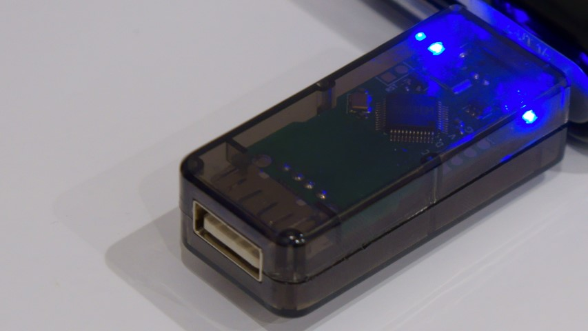

Keyboard Quantizer B/B2

Keyboard Quantizer B/B2 はUSBキーボードのキー入力を別のキー入力に変換し有線または無線で送信できるデバイスです。
PCのソフトウェアに依存しないので、どの環境でも自分が設定したキー配列で入力できます。 どのPCでもCAPS LOCKをCtrlキーとして使えるようにしたり、お気に入りの配列で入力できるようになります。 もちろん単にUSBキーボードを無線キーボードにするアダプタとしても使えます。
自作キーボードの定番であるQMK Firmwareを利用しており、キーボードの論理配列の柔軟な変更、レイヤーやマクロの追加といった機能に対応しています。
キーボードだけでなくマウスやトラックボールの入力を変換することもできます。
購入リンク
特徴
- USBキーボード/マウスの入力の解析, 変換
- 有線/無線での送信
- 8台までペアリング可能
- Remapを使った論理配列の書き換え
- 低消費電力
- 本体単体の消費電流：約 8mA
- 全体の消費電流は接続するデバイスとオートパワーオフ防止機能の設定によって変動します
- モバイルバッテリーのオートパワーオフ防止機能搭載
- 使用するバッテリーとの相性によっては効果がない場合があります
仕組みの説明
簡単な仕組みとしては、1. USBホスト用のマイコンがUSB機器と通信し、2. 受け取ったレポートをボード上のQMK用マイコンに送信、3. QMK用マイコンはレポートから押されたキーを判定してQMK上の処理をする、という流れになっています。
そのためFnキーなどのレポートとしては送信されないキーには反応できません。Fnキーと他のキーの組み合わせにより入力されるキー/音量調整などの入力は受け取ることができます。
NKROやポインティングデバイス付きのキーボードについては認識できる場合とできない場合があります。 一般的なプロトコル（モディファイア + 予約 (1byte) + 6キー分のデータを送信する）のキーボードやマウス（8ボタンまで、スクロール、パン）であれば安定して認識できます。
既存のファームウェアで認識できないデバイスについてはファームウェアを改造して頂く必要があります。
有線版 Keyboard Quantizer との比較
| 有線版 | Keyboard Quantizer B | |
|---|---|---|
| 主マイコン | Atmega32U4 | nrf52840 |
| ROM サイズ | 32KB | 1MB |
| 最大レイヤ数 | 6 | 10 |
| 接続方式 | 有線 | 有線または無線 |
| キー送信間隔 | 8ms | 8ms（有線）/ 8ms（無線） |
| マウス送信間隔 | 1ms | 1ms / 8ms（無線） |
| QMK | 公式のブランチに準拠 | nrf52 用フォークを利用 |
- そのほか、USBハブ(内蔵デバイス)との相性問題が改善されています。
- サブのマイコンには同じ CH559を使用していますが、ファームウェアは異なります。